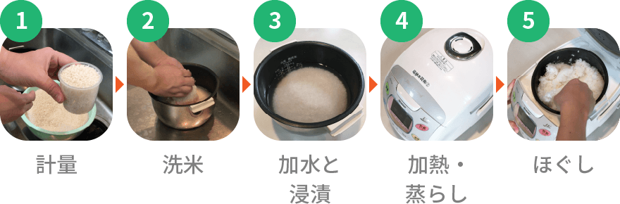
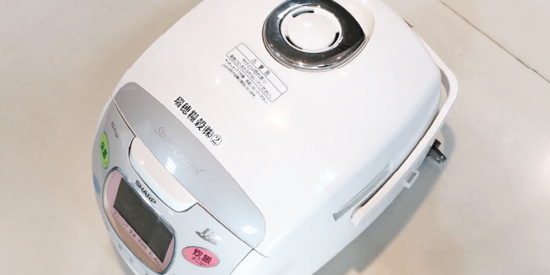

白米の炊き方

みなさん普段ご家庭で何気なくごはんを炊いていると思いますが、実は「炊飯」という作業
はとてもデリケートで、その炊き方によってごはんの炊き上がりが大きく変わってきます。
最近の家庭用炊飯器は技術の進歩によりとても良くなっていますので、普通に炊いても上手に炊けます。
ここではさらに美味しくごはんを炊くコツ、というより今更聞けない本来のお米の炊き方をみなさんに知ってもらいたいと思います。
1. 計量
炊きたいお米の量を正確に計量します。
カップに入れるお米はちょうど擦り切り一杯。
一杯が約150ｇになりますが、はかりがあれば重量を正確に測ることをオススメします。
2. 洗米
お米に水を加えたら手早く2~3回かき回し、すぐに水を捨てます。 水を加えた時点からお米は吸水を始めているので、
最初の濁った水はすぐに替えることが大切です。
お米よりも少し多めの水を入れた状態で、両手でお米同士をこすり合わせるように研ぎます。
お米表面を磨くイメージで優しくお米を洗ってあげて下さい。
割れたお米が多くなり過ぎるとベちゃっとしたごはんになってしまいます。
濁った水を替えては手早く研ぐ、という作業を濁りが薄くなるまで繰り返します。
水が透明になるまで研ぐ必要はありません。研ぎすぎると割れが多くなるばかりでなく、米のうまみ成分も失われ、ごはんが美味しくなくなってしまいます。
3.加水と浸漬
お米の重量に対して1.4倍の量の水が最適。
お米と水を火にかける前に、お米に水を吸わせるための浸漬時間をとる必要があります。
約1時間浸漬する事が出来ればお米の中心部までしっかりと吸水するでしょう。
完全に吸水したお米は、キレイに全体が真っ白になります。
吸水が不十分だと、熱が中心部まで伝わらずに芯の残ったごはんになってしまいます。
一般的な電気炊飯器には、プログラムの中に浸漬時間も10~15分程度含まれていますので、それを考慮する必要があります。
4.加熱・蒸らし

熱を加えれば良いというものではなく、
最初は弱火でゆっくりと
温度を上げていき、沸騰したらその温度を維持して、火加減を調整しながら煮る、蒸す、焼くという工程を経てごはんが炊き上がります。
今は家庭用電気炊飯器がスイッチひとつで全てをやってくれるので、おいしくご飯が炊けているというわけです。
炊飯器のプログラムには、蒸らし時間も10分~15分入っていますが、
できれば20〜30分とれるとふっくらした炊き上がりになります。
5. ほぐし
蒸らしが終わった後に、飯粒表面の余分な水分を飛ばすために
ごはんをほぐします。
ごはんの粒をつぶさないよう、しゃもじで切るようにして全体をほぐし、水蒸気を逃がします。
ほぐしを行わないと、時間が経つとべたついたごはんになってしまいます。
上記の手順と注意点に気を付けて炊飯を行えば、おいしいごはんが炊き上がると思います。
ただ厳密に言うと、お米の産地や品種、その年産によっても米の質が異なります。
ということは、そのお米に合った炊き方というものもそれぞれ違うわけで、やはり炊飯は繰り返し行っていくうちにそれぞれの加減を掴んでもらうのが一番です。
皆さんも毎度ごはんを炊く度に、その炊き上がりを比べてみて、ご家庭の炊飯のプロになって下さい。